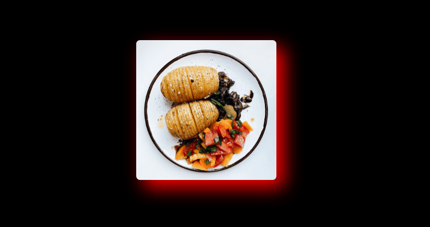
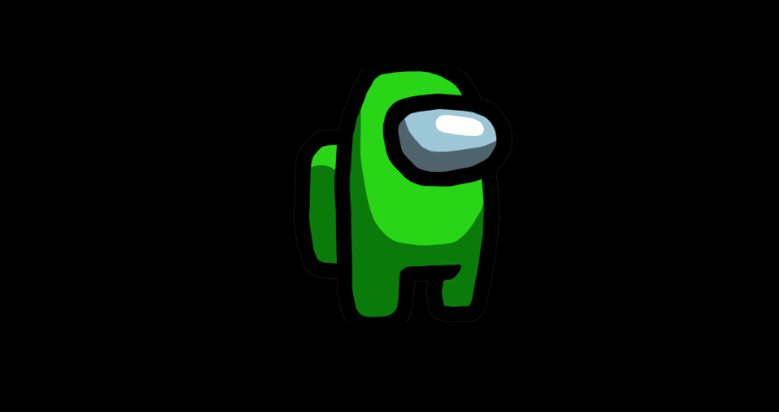
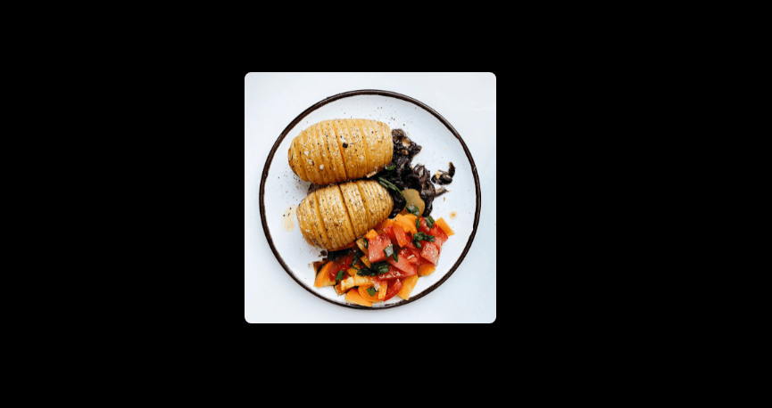
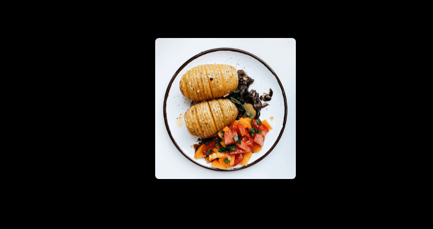

加上 filter 後質感立馬提升！
列表
主要會用在圖片上的屬性（但不僅限於圖片），簡單來說就是濾鏡，看範例最快！
filter: brightness() 設定明亮度
1 | /* 設成 150% 也可以 */ |
filter: blur() 設定模糊
1 | img:hover { |
filter: contrast() 設定對比度
1 | /* 也可以設成 1000% */ |
filter: drop-shadow() 設定陰影
1 | img:hover { |

跟 box-shadow 的差異是它能判斷透明的部分，而不是直接加在外框上，參考下圖：

filter: grayscale() 設定灰階
1 | img:hover { |
filter: hue-rotate 色調旋鈕
暫時不知道能做什麼，但很酷！
1 | img { |
filter: invert 負片效果
1 | /* 注意只有 0 ~ 100% 之間的值有效 */ |

filter: saturate 飽和度
1 | img:hover { |

filter: sepia 懷舊效果
1 | /* 預設值為0，需要 0 ~ 1之間的值 */ |